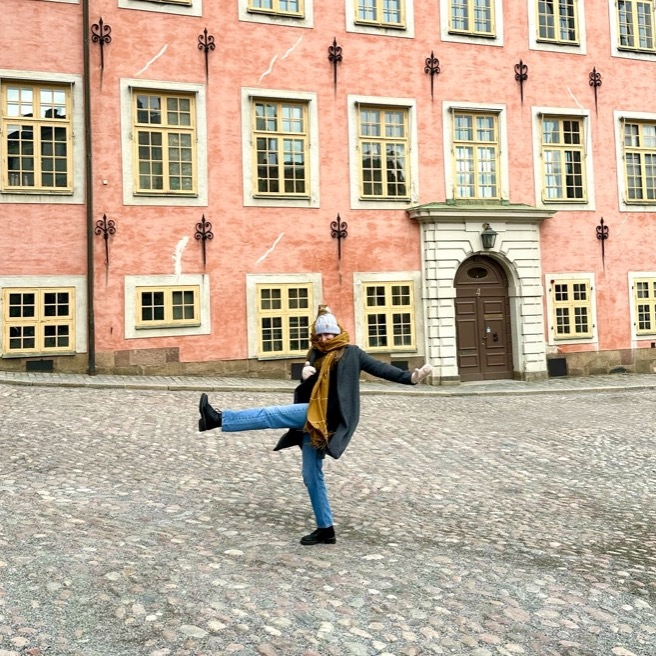

Lauren Cain

Summary
I'm a Graphic Designer, learning web development to expand my skills and open more career paths. I'm experienced in corporate design, web design, and motion graphics.
Education
Certificate, Introduction to Programming - The University of Edinburgh, Coursera (2024)
Advanced Diploma, Graphic Design - George Brown College (2018-2021)
Certificate, Art and Design Foundations - George Brown College (2017-2018)
Work Experience
- Freelance Graphic Design
2018 - Present
- Work with a variety of businesses to create their brand and/or elevate their materials.
- Illustration, branding, web design, photography, motion graphics, social media, research, copywriting, document remediation.
- Graphic Designer - Ext. Marketing
2021 - 2023
- Worked with the studio team to bring client projects to life.
- Branding, layout design for corporate materials (print and digital), web design, motion graphics, copywriting, document remediation.
- Presented concepts and final deliverables to internal teams and external key stakeholders.
Skills
- Adobe Software
- Microsoft Suite
- Time Management
- Communication
- Collaboration
Achievements
- Intent Award for Accessible Design - Association of Registered Graphic Designers (RGD)
- IN Industry Ready Award - School of Design, George Brown College.
Other